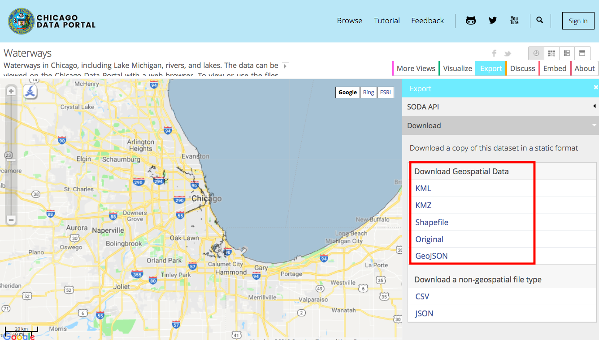

Chapter 3 Multiple-Dataset GIS Operations / Visualization
3.1 Learning Objectives
- Create multi-layered maps
- Calculate the area of polygons
- Find spatial intersections
- Save maps for future use
3.2 Functions Learned
From ggplot2 - for visualization:
ggplot()geom_sf()ggsave()
From sf - for GIS operations:
st_cast()/st_union()st_area()st_intersects()
From dplyr - for data manipulation: See below link for a great tutorial on how to use dplyr with sf to do data analysis.
arrange(): changes the ordering of the rows.filter(): picks cases based on their values.mutate(): adds new variables that are functions of existing variables.
3.3 Challenges
- For each new function we go over, type
?in front of it in the console to pull up the help page. - Import and project the 1998 ward data. Calculate the centroids of the data.
- Map the centroids using ggplot2.
- Import and project the Chicago waterways data GeoJSON. 
- Map the waterways data.
- Make a ggplot of the wards and the waterways.
- Save the map.
- Make a ggplot of all wards that intersect the river.
- (if time) Customize your map.
Remember to push your work to Github to back it up!
3.4 Notes
- If you keep getting the following error message, try reversing the
geom_sfs again and/or highlighting/re-running the lines of code multiple times.
Error in grid.Call(C_textBounds, as.graphicsAnnot(x$label), x$x, x$y, :
polygon edge not found- Save all figures in
docs/figsin your project.
3.5 Links
- Link to current Chicago waterways data: https://data.cityofchicago.org/Parks-Recreation/Waterways/eg9f-z3t6
geom_sfdocumentation page: https://ggplot2.tidyverse.org/reference/ggsf.htmlggsavedocumentation page: https://ggplot2.tidyverse.org/reference/ggsave.htmldplyrpackage documentation site: https://dplyr.tidyverse.org- Excellent blog post on how to manipulate spatial information: http://strimas.com/r/tidy-sf/